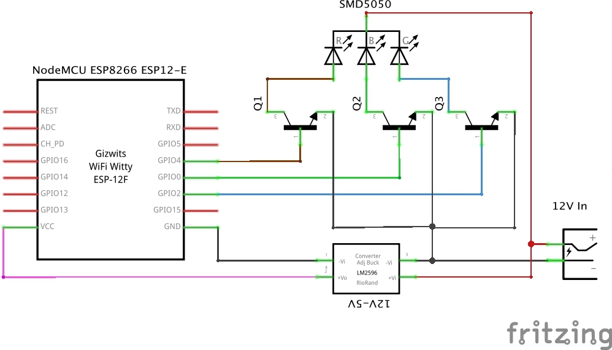
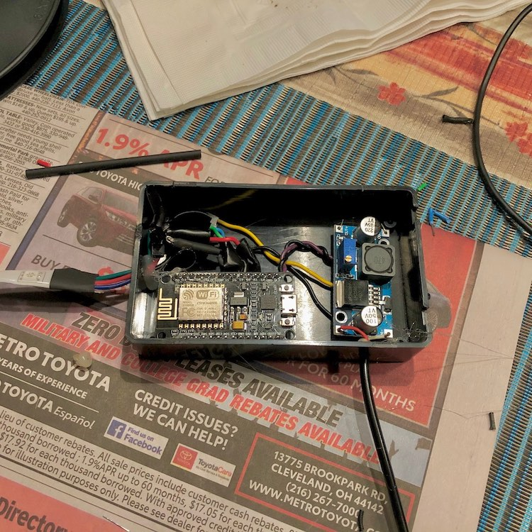
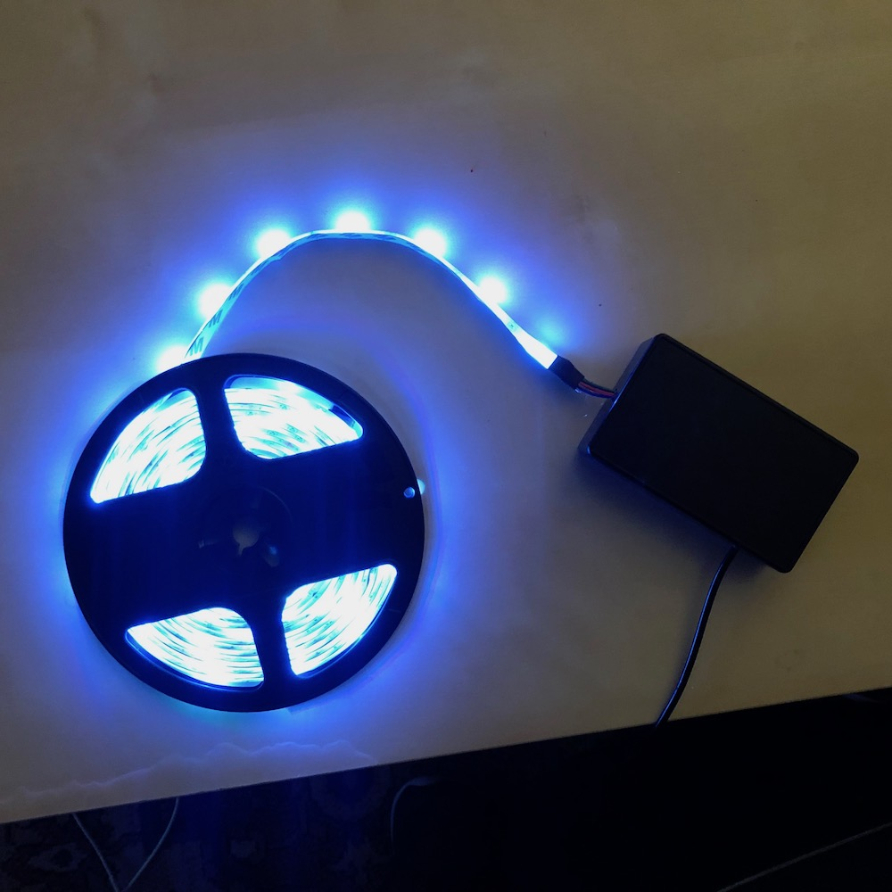
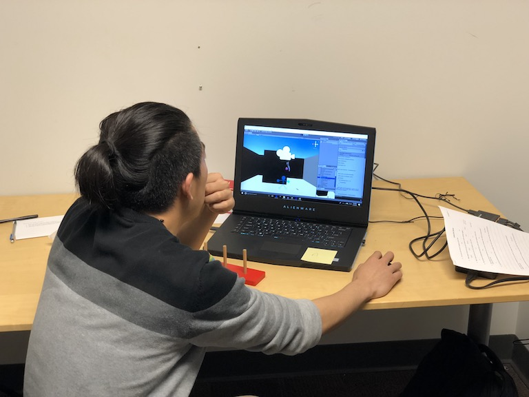
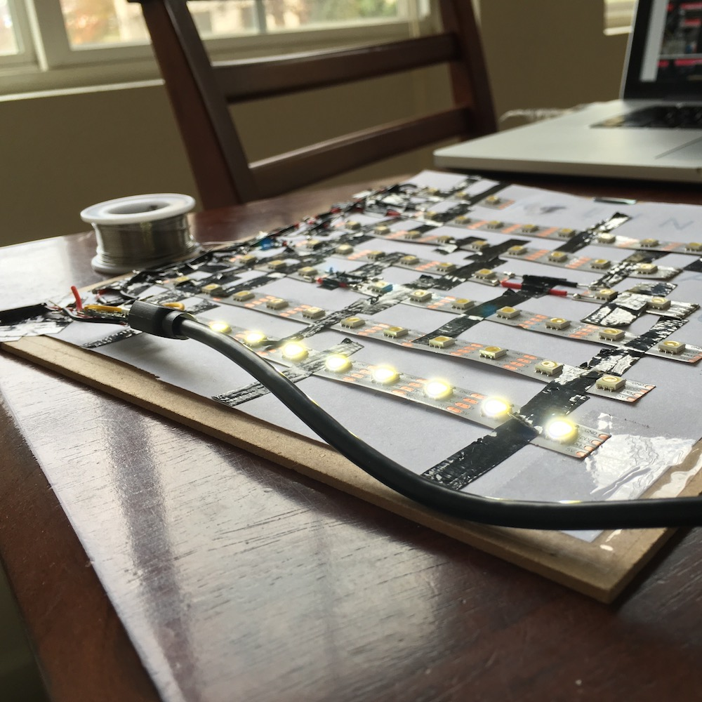
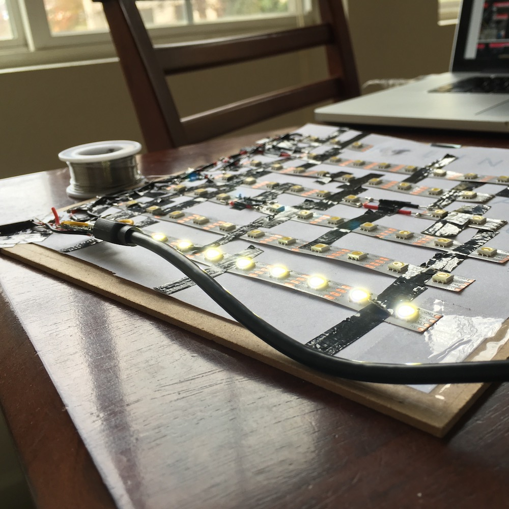
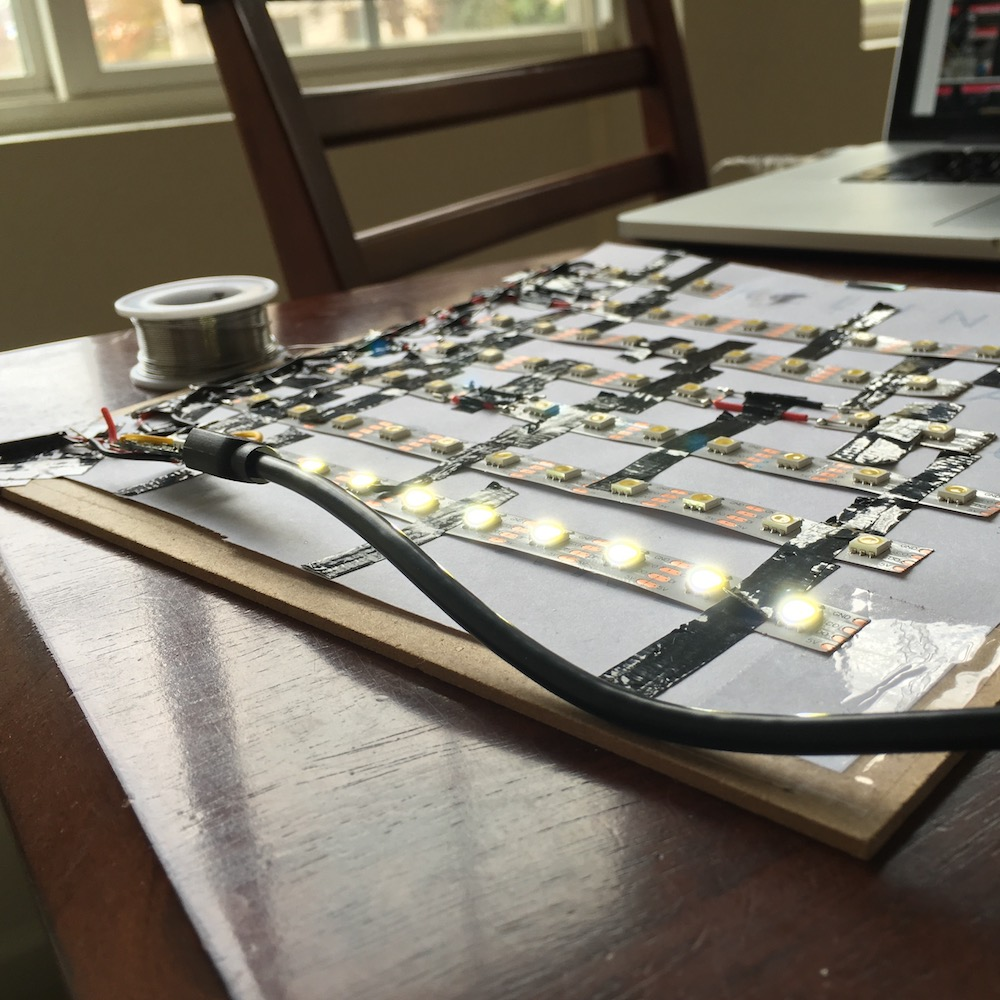

I'm an extremely passionate Computer Science MS and Computer Engineering BS Graduate of the University of Cincinnati. I'm seeking full-time employment starting, and I'm available immediately.
In my time at UC, in coursework and on co-op, I've discovered my enthusiasm for applying my computer software and hardware to unique problems that push the envelope. I'm at home when I'm faced with fresh and interesting problems that I get to work out every day.
I've also discovered the value of developing strong communication and design skills. These skills are the spark that a solution needs to make it into the real world. After all, what is a new technology if no one can explain it, or if people don't know how to use it?
I want to keep learning new things and developing my skills and applying them to exciting problems to build something new.
Technical Passions — Machine Learning, Voice Interfaces, Autonomous Vehicles, Robotics, HCI/UX/UI, Internet of Things
Personal Obsessions — home automation, photography, watching every lastvideoessay about film on YouTube, watching tech press conferences like they're sporting events, hiking & backpacking, technology & policy, technology & design, driving stick, ultimate frisbee (not that I'm any good), AirPods
While diving deeper with my coursework into the fields that Computer Science has to offer (from Vulnerability Assessment to Human-Robot Interaction) I was also conducting research with Dr. Nan Niu on Information Foraging Theory. You can read more about my thesis below, in the Projects section. The thesis was adapted from my submission to IEEE's VL/HCC 2018. That submission was accepted and presented in October 2018 in Lisbon, Portugal.
Bachelor of Science, Computer Engineering, University of Cincinnati
May 2018
GPA 3.59/4.00
Cincinnatus Excellence Scholarship, Honors, Dean's List
Minor in Computer Science, Minor in Mathematics, International Co-op Program
The most impactful part of my undergraduate experience was alternating academic and co-op semesters. It's one thing to immerse myself in the fields of Electrical Engineering and Computer Science in a classroom. It's another to work for five semesters, applying that coursework and finding out what kind work I'd truly be passionate about.
St. Ignatius High School, Cleveland, OH
Class of 2013
I wouldn't be who I am today without my high school experience. I was encouraged to grow not only through liberal-arts coursework, but also through opportunities such as service trips where I was encouraged to put the people around me before myself.
Work Experience
Corporate Research Co-op, Bosch, Renningen, Germany
2017
From January to August 2017, I worked at Bosch's Research Campus near Stuttgart, Germany. I spent a most of that time designing and developing a research software suite for sensor data aggregation and analysis, implemented with InfluxDB, node.js, and modern web technologies. (I love sensors!) I was detail-obsessed as I built the suite ground-up to be modular and user-friendly; it had to be useful to as many different types of researchers with as many different types of sensors as possible. I also assisted in building experimental sensor platforms in Altium for PCB design and layout, and Solidworks for 3D-printing of PCB enclosures.
Modular sensor research software suite
InfluxDB, node.js, Modern Web Technologies
Altium, Solidworks
Through this time, I was able to further my professional competencies and contribute to Bosch's research through communicating with researchers—eliciting their requirements, and seeing these requirements through to finished applications (all while learning the requisite web technologies). Above all, though, I had the opportunity to live and learn and work in German with people from around the world.
Living & Working in Germany
Innovation Lab Co-op, BMW Manufacturing, Greenville, SC
2015
January–April and September–December of 2015, I worked at the Information Technology Research Center, near the BMW Manufacturing plant, in Greenville, South Carolina. There, I assisted my department's effort to investigate applications of emerging technologies in manufacturing. The department's main focus during my time there was Big Data.
Big Data
To that end, I worked with automobile inspectors to develop and deploy an iOS application that saved each inspector over an hour a day, while providing us with training data for models. Upon completion, the application was presented to the BMW Board of Directors. I autonomously scheduled meetings with managers and inspectors to elicit requirements and give updates, designed the application to meet the requirements of the inspectors and my department, conducted training, acquired and deployed hardware, and supported the application in production.
iOS app that saved users 1+ hours/day
Before this, I also supported the development and coordinated training and trials for an experimental Google Glass application that assisted in automobile inspections, and supported a research project which would help line workers who were suffering from repetitive strain injury with 3D-printed customized braces. Between major projects, I explored building 3D environments, used for inspections or virtual tours, with photographs taken by quadcopters and a custom-built Raspberry-Pi-based ballbot. Alongside this, I prepared large training datasets with Shell and Python.
Google Glass Application
3D-printed customized braces
Building 3D environments
Shell and Python
With all of these concurrent projects over the course of eight months, I also had significant experience in managing my time and utilizing my resources to meet parallel demands. Furthermore, all of the technologies I encountered in my time at BMW were new to me, and I demonstrated that I was capable of quick learning, and that I was able to apply my existing skills to new fields.
Student Researcher, University of Cincinnati, Cincinnati, OH
2016
In Summer 2016, I took the opportunity to explore research in an academic context. I worked with Dr. Rashmi Jha in the MIND Laboratory, developing and exploring neuromorphic hardware based on ReRAM technology. In my ten weeks there, I learned about semiconductor fabrication and neuromorphic methods for implementing machine learning in hardware. I contributed to the research conducted in the lab by developing a MATLAB simulation workbench for testing various parameters in relevant learning models.
Recognizing Speed Limit Signs: Keras/TensorFlow, YOLO, Raspberry Pi, and my VW Golf
I'll be honest: I'm new to Keras and TensorFlow, having only taken a pair of Lynda courses, and I might be biting off more than I can chew. But I am haunted every day by the fear that I missed a speed limit sign and that I'm driving the wrong speed, and I need a solution. (And also I wanna learn a bit more about Keras and TensorFlow!) So I've downloaded the LISA Traffic Sign Dataset and I'm going to train a model on it. And I'm going to run that model on a Raspberry Pi in my car, and I'm never going to miss a speed limit again.
DIY Wifi, Voice, and Automation Controlled Budget RGB Light Strip
Hobby Electronics: my comfort zone. Arduinos and Raspberry Pis have always been my favorite toys at home. And then, ever since buying a set of Philips Hue lights, I've been trying to automate everything by hooking it up to Apple's HomeKit smart home control system. Finally, as anyone who has ever lived with me can attest, I have a thing about lighting. I will spend a whole afternoon trying to get the right color, intensity, and accent lighting in a room. This leads me to this project: an ESP8266-controlled RGB light strip.
The motive of this project, besides having another fun and cool light source, was to get to know the ESP8266, which promises to enable extremely inexpensive homemade smart home appliances. And "inexpensive" is a key word here! Inspired by another project, I assembled my BOM mostly from eBay for about $20:

After remembering how transistors work and assembling and testing the circuit with some simple offline Arduino code, the time came to connect the circuit to HomeKit... Luckily, there was no need to re-invent the wheel on this one, as it had been done before. (I'm not claiming this is novel work!) While I considered connecting the ESP8266 to an MQTT Server that could communicate with HomeKit, or even connecting directly, ultimately I decided to find a solution that relied on homebridge, a wonderful open-source project that runs on a server and looks like a HomeKit hub to Apple devices, which I already had running in my home. And, I even found a great guide which provided both functioning Arduino code to run on the ESP8266, and configuration for a homebridge module. Finally, I went ahead and rewrote the Arduino Code so that switching between colors would have a nice transition, and made some changes to the config.json in order to work with the latest version of the homebridge module.

After an afternoon of bug-fixing (you'll notice, in the video below, things like White having a wild HEX value in the serial output thanks to a bug in my brightness-parsing code), I stuck all the components into a project box (may the gods of soldering, electrical tape, and hot glue please forgive me) and gave it a good stress test. Success.

This Website
After spending one-too-many evenings obsessing over my theme parks in Roller Coaster Tycoon, I decided to put my detail-and-layout obsession towards something productive. A couple dozen hours later, here I am typing this lil interactive <div> element! I've been applying my experience from my web app writing at Bosch towards writing this page, and like with most coding projects, I've spent a fair amount of time on Stack Overflow figuring out how to do what I want to do. I've spent an incredible amount of time making sure the site will work without JavaScript (brought to you by checkboxes and CSS3...) and on all form factors.
View the source code here.
Creating Socio-Technical Patches for Information Foraging: A Requirements Traceability Case Study
In my thesis, I explored applications of Information Foraging Theory. We hunt for information in the exact same way that we've evolved to hunt for food. How long do we spend in one place before we move on? How do we estimate how much food that place will have? If we understand that human behavior better, maybe we can make the Software Engineering process better. Can we make developing more efficient by making good information easier to reach, identify, and navigate?
Within information foraging theory, I'm currently focusing on foraging in socio-technical environments. It's hard to answer questions in environments that have both information artifacts and people; one must consider both the relationships between information and the relationships between people when seeking answers. For example: let's say I just saw the movie Interstellar and I'm looking for more moves I'd like. We could recommend Gravity, or Star Wars, or The Martian, too. But despite being sci-fi, they're all quite different movies. What happens, though, if we add a human element? Christopher Nolan directed Interstellar. That connects me to The Dark Knight and Dunkirk—now different genres, but still movies I loved for the craft and scale that Christopher Nolan brings. By adding a human element to our graph, among other elements to make it heterogeneous, we suddenly have more nuanced information foraging.
With the indispensible guidance of my advisor, and quite a few late nights, I was able to submit the core work of my thesis to IEEE's Visual Languages and Human-Centric Computing Conference (VL/HCC) in April of 2018, four months after beginning work. Incredibly, it was accepted! I had an incredible experience travelingtoLisbon, and presenting my work to the conference, while learning about the world of Visual Languages and Human-Centric Computing. When the proceedings show up online, I'll link to them here.
Image: The work which formed my thesis consistedof two parts: creating graphs from socio-technical environments, and assigning weights to each node in the graph (where a weight represents a node's relevance to a user's question in that environment). You can see one of these networks here, where the intensity of red in each node represents its weight.
Human-Robot Interaction Study
Maybe I should have gone into Psychology, for Human Factors. Don't get me wrong—I love problem solving with computers. But figuring out human problems is just as fun to me as building an app or gizmo. I first had an inkling of this when I had the wonderful challenge of designing UI/UX for non-technical users of my app. How do they think the app should work, and what visual cues could I provide, incorporating those expectations, so that the user could accomplish their tasks? In Human-Robot Interaction, I had a semester of an in-depth look at how people think, and how we should design robots around those thoughts.
In this class's final project, we were tasked with designing a Human-Robot interaction study, to test how humans react to some element within robotics. To substantially lighten physical, monetary, and safety concerns, we decided to conduct a trial in Virtual Reality. Within a VR environment, programmed in Unity, we had our subjects pass a ball to a humanoid robot arm and a non-humanoid robot arm. We were testing to see if the appearance of the robot would affect the passing task (with the hypothesis that our subjects would more-confidently pass the ball to the humanoid robot).
How did it go? Well, not that well. At the end of the semester, there were only so many underclassmen who weren't furiously studying for exams that we could conscript for our test. With a sample size of 16, we didn't have the statistical power to say anything for certain. Aside from that, our Godspeed Questionnaire indicated that perhaps the difference between our humanoid and non-humanoid models wasn't good enough. Is it something we could publish? Heck no. But I learned so much about conducting a human trials, and indeed, Human-Robot Interaction.

Senior Design: Time Management Web App
Tic Talk: A Time Management App
The problem was this: my roommate and I took a long time to learn time management through college and in our years of bad time management we lost sleep and we cut corners on assignments. As we got better at managing our time, so too did the quality of our lives increase. How could we, Computer Engineering students, create something for our Capstone Senior Design project, that could help others do the same?
We spent fall semester planning. With our advisor's guidance, we conducted interviews with our target audience (Engineering College Students) to elicit requirements, and worked hard to decide how to turn those requirements into features. In the end, we decided that we needed an application that would
allow users to input their upcoming assignments and schedule them as desired
suggest how long an assignment might take based on history and user estimation
automatically schedule a week
integrate with Google Calendar
be cross-platform
be easy-to-use (to satisfy my recent UI/UX obsessions)
engage with the user to encourage good practices (without being an annoying Clippy)
Then, came spring semester. Oh how quickly that deadline came up on us. Overwhelmed with our other classes, we had trouble dedicating the time we needed to polish this application. Frankly, we could have used our own app. But despite that, we managed to constantly adapt our plan to changing circumstances and to have a working prototype at the Senior Design Expo. And here it is:
It wasn't without bugs, but we still found things to be proud of. The Google Calendar integration had a surprising number of hurdles that were overcome. The interview process was extraordinarily insightful, and deeply developed our skills in developing requirements. We managed to meet our stakeholders' requirements with a clever paradigm that encouraged users to schedule work in reasonable blocks, ahead of time, and to still get plenty of sleep. We learned from Material Design and the Apple Human Interface Guidelines and developed an intuitive design language and interaction paradigm. And finally, the project itself managed to be one last lesson in programming Time Management.
"Anything?" "Yes, as long as you gain experience with Embedded Systems." Such was the directive that launched our Embedded Systems project, which set out to automatically make coffee using a real brew method (we chose pour-over) and to wake a user up. Controlled by Arduino, the hand-stained wooden programmable digital clock will boil water, pour into a wire-mesh pour over, and ring a large call bell with a servo until you press the big "OFF" button.
Quantified Selfie
Inspired by an awesome project I saw online, I decided in 2015 to analyze six years of Facebook messages and SMS in order to not only practice data analytics in Python, but also to gain interesting insights on my relationships. The project involved scrubbing HTML, storing data in useful data structures, and manipulating and plotting the data using NumPy and Bokeh in Python.
Word Clocks
I thought I'd solved the yearly struggle of coming up with an individualized thoughtful Christmas present for everyone in the family pretty nicely in 2015! For my Lithuanian family, I made clocks, based off of individually-addressable LEDs (I have an obsession with lighting) driven by an Arduino, which spell out the time in plain English—er—Lithuanian. "It is 12 'o clock".

Related Experience
Teaching Assistant, Engineering Modelswith MATLAB
2016 – 2018
All Engineering Students at University of Cincinnati are required to take two semesters of Engineering Models—an introduction to programming (in MATLAB). The concepts taught in this class are useful for all majors, not only because programming is a cross-disciplinary tool, but also because learning programming encourages the kind of critical thinking that's necessary to breaking down Engineering problems. As a TA for this class, I've worked with students from diverse backgrounds as they begin their journey in Engineering, working with them in two hour weekly labs to understand the challenge of the week, or to understand the fundamentals of programming. No matter what, the eight hours a week I spent as a TA in lab have been bright ones.
Counselor, Head Counselor, Camp Kretinga Lithuanian CatholicYouth Camp
2010 – 2014 & 2018
In my high school and early university summers, I returned to my childhood summer camp as a camp counselor. There, I cared for groups of 8-14 year old kids and planned educational and engaging programs. As I became a senior counselor, I was put in charge of larger programs, often working with or leading groups of counselors for a successful day or evening. I could not fill my summers with enough of this challenging and gratifying job. Several years later, I was able to return to the camp as the head counselor, where I coordinated a team of over a dozen counselors. I learned not only how to manage people to make sure that programs happened, but I also gained valuable experience in fostering a culture of enthusiasm among the counselors and campers through example and instruction.


 
